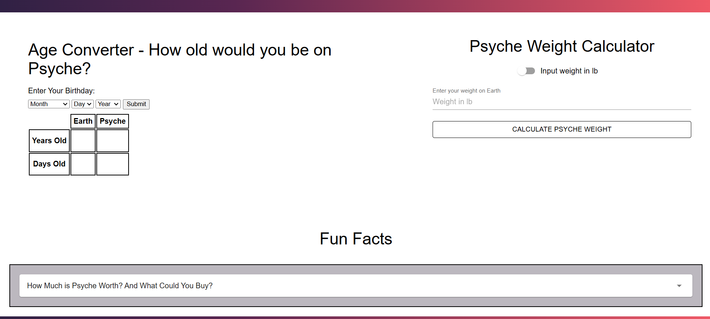

Thomas Jamieson

- About Me:
- Projects:
- Resume:
Hello! I’m Thomas Jamieson, originally from small town Fallon, Nevada. I have recently graduated from Brigham Young University-Idaho with a Bachelor of Science in Computer Science and a minor in Electrical and Computer Engineering. I’m passionate about the endless possibilities that programming offers, and I’m excited about where my professional journey will lead. I’ve been happily married for over two years, and my wife and I have a wonderful little boy. In my free time, I enjoy playing and watching sports, particularly tennis and pickleball, and I love spending time with family playing card, board, and video games.
I have made several projects, but I am quite proud of my project 'Remember Words'. Simply put it is a dynamic list that helps the user learn how to spell words that they struggle with. Here is a video that I made that shows the functionally of the application:
Recently I have worked with several classmates and ASU to make a promotional website for the NASA Psyche mission. Below is a link to the website itself and to the ASU website that shows off our website. There is also a screenshot of the page that I worked the most on. The age converter is a fun way for users to see their age if they were on the Psyche Asteroid; while the fun facts is a good way to get the users thinking about the asteroid in a new and interesting way. I hope you enjoy!
Link to Psyche Website Project
